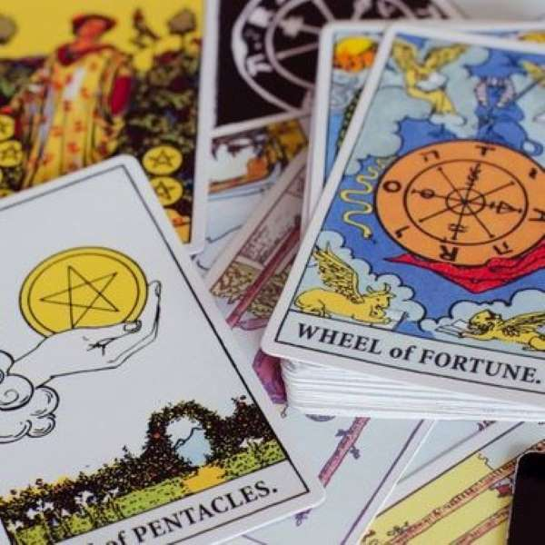

Inicio>Servicios
SERVICIOS
Lecturas de Tarot Evolutivo🔮
Es una herramienta que te permite averiguar y entender cuál es el fondo del problema ó inquietud que te invade, las posibles soluciones para poder crecer espiritualmente y solucionar de raíz la situación o el problema que te preocupa.

Lecturas de Tarot de los Angeles🔮
Es uno de los oráculos más importantes a la hora de encontrar soluciones en el amor, el trabajo y la salud.
El tarot es una baraja muy poderosa, capaz de leer los sentimientos de las personas que nos rodean. Se trata de un conjunto de cartas que canalizan su energía, y nos hablan de vivencias pasadas, situaciones del presente y de lo que puede llegar a suceder en el futuro.Las lecturas de cartas son un medio para conectar con las personas que ocupan un lugar en nuestra vida. Hay 22 arcanos mayores y 56 arcanos menores, y tan importantes como las cartas de la tirada son su posición, numerología, la manera en que salen y cómo se ven influenciadas por el resto de la tirada.